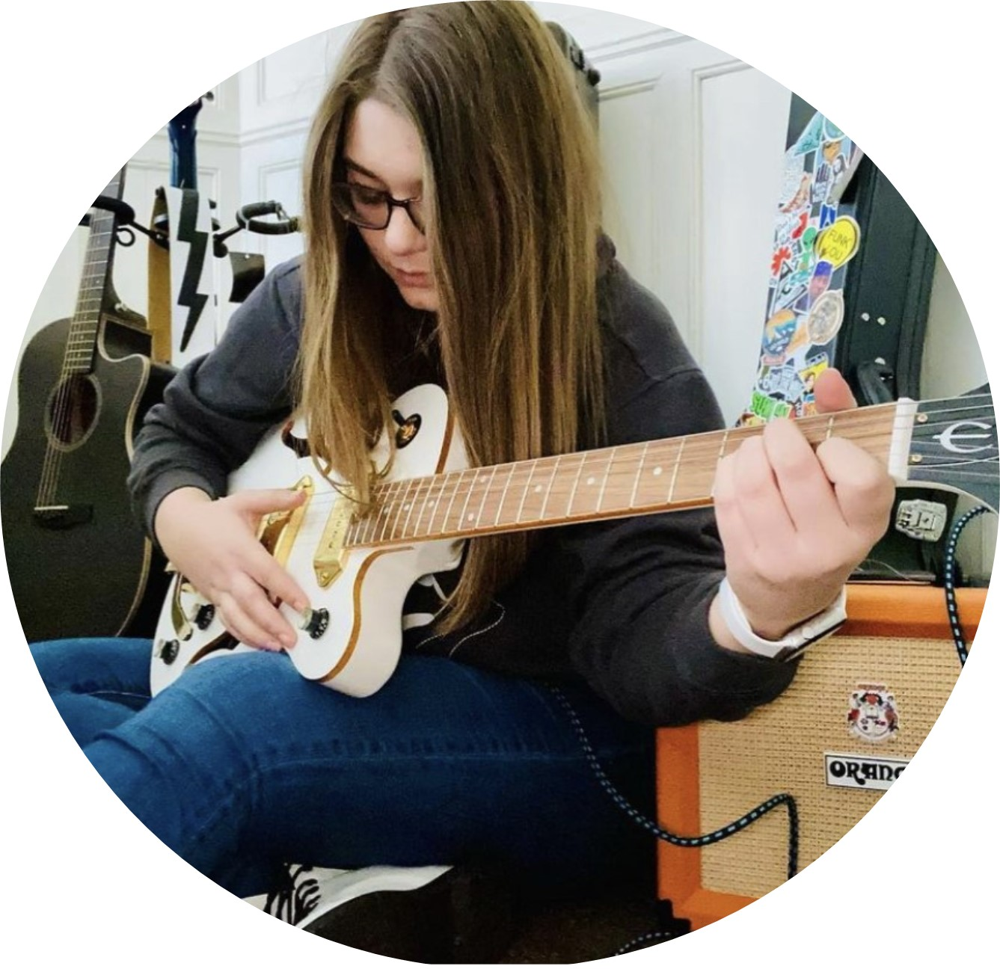
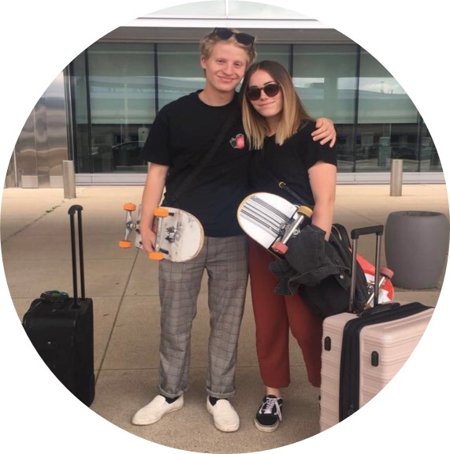
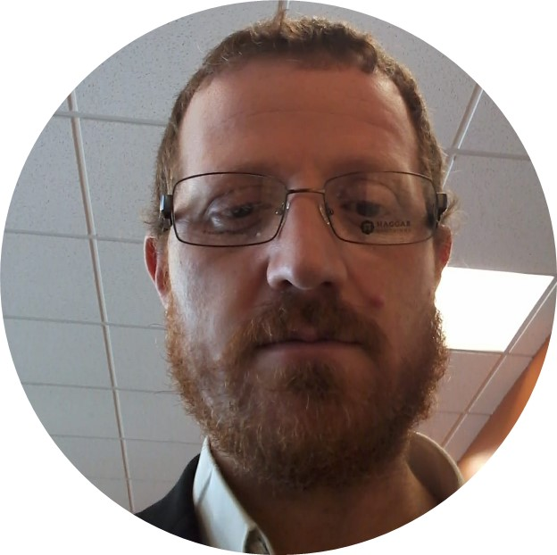
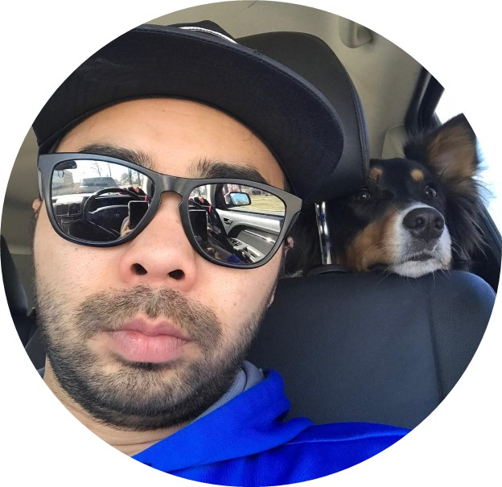
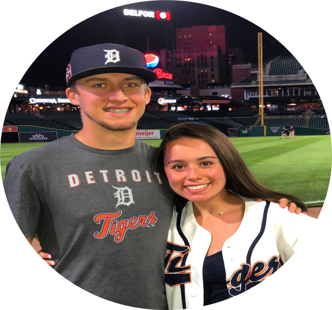

Team 4!
Learn more about the team that wrote this app!
Mikayla
Mikayla is a senior at Wayne State University studying Computer Science and Mathematics.
After gradutation she hopes to persue a Master's Degree in Human Computer Interaction.
In her free time Mikayla likes to play guitar, listen to music and spend time with
family and friends.

Kristopher
Kristopher is a transfer student at Wayne State University studying Computer
Science as his major. When he graduates, he hopes to get a full time job
as a full stack software engineer. When Kristopher is not developing software,
he likes to spend time outdoors by skateboarding, snowboarding or fishing!

Nathan
Nathan is working towards a second career in Data Science.
To contribute to his future career in big data, Nathan is a
double major in Computer Science and Mathematics. In his spare time,
he enjoys reading, traveling and spending time with family.

Bryan
Bryan is a senior working towards this Bachelors degree in Computer Science.
He is happily expecting his first child, and his free time is spent coaching youth
hockey in his hometown Plymouth, MI.

Tyler
Tyler is a senior working toward a bachelor’s degree in computer science at WSU. Aside from school, he works as a baseball coach at Grosse Ile High School and a Herbalife health coach.
